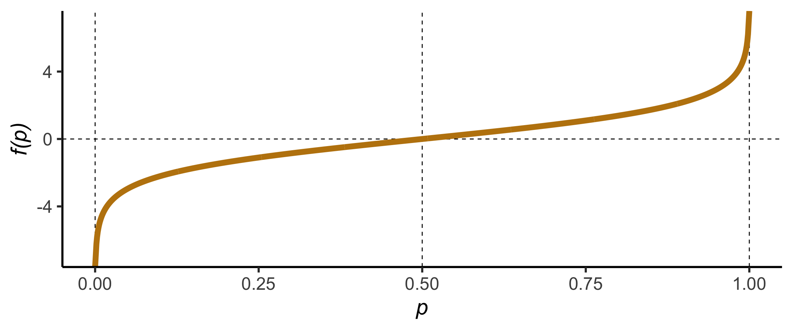
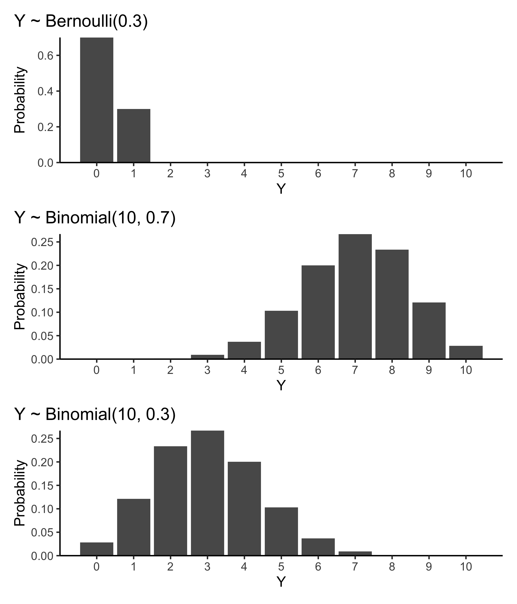

Suppose we consider y_i as a binary category: y_i = \begin{cases}
1 & \text{ if $i$-th observation is in class 1}\\
0 & \text{ if $i$-th observation is in class 2}\\
\end{cases}
Instead of modelling the outcome directly, we consider the conditional probability, say P(y_i = 1|\boldsymbol{x}_i) where \boldsymbol{x}_i = (x_{i1}, x_{i2}, \ldots, x_{ik}), also known as the propensity score of class 1.
The propensity score of class 2 is P(y_i=0|\boldsymbol{x}_i) = 1 - P(y_i=1|\boldsymbol{x}_i).
Odds of an event
The odds of an event is defined as \text{odds} = \color{#BE830E}{\frac{p}{1-p}} = \frac{\text{probability that the event will occur}}{\text{probability that the event will not occur}}, where p is the probability of an event occuring.
The ratio of the propensity scores of the two classes is the odds of being in class 1:
Notice that 0 < g(z) < 1 for all finite values of z.
Logit function
The logit function:
f(p) = \log_e \left(\frac{p}{1- p}\right)

Here -\infty < f(p) < \infty for all p \in (0, 1).
Note that logit and logistic functions are inverse functions of one another, i.e. f(g(z)) = z and g(f(p)) = p.
Binomial distribution
Suppose Y is binomially distributed B(n, p).
This means that there were n trials, each with a probability p of success, and Y is the number of successes out of n.
The expected value of Y is E(Y) = np.
If n=1, Y can only take the values 0 or 1 and the distribution is referred to as Benoulli distribution.

Logistic regression
Logistic regression for binary response
Logistic regression is a generalised linear model where it models the log odds as a linear combination of predictors: \text{logit}(p_i) = \log_e \left(\frac{p_i}{1-p_i}\right) = \sum_{j=0}^p\beta_jx_{ij}, \quad p_i = \frac{e^{\sum_{j=0}^p\beta_jx_{ij}}}{1+e^{\sum_{j=0}^p\beta_jx_{ij}}}
We assume that Y_i \sim B(1, p_i) where p_i = P(Y_i=1|\boldsymbol{x}_i).
Note that E(Y_i|\boldsymbol{x}_i) = p_i.
Logistic regression with a binary response
When response is a binary value (0 or 1):
str(cancer$diagnosis_malignant)
num [1:568] 1 1 1 1 1 1 1 1 1 1 ...
table(cancer$diagnosis_malignant)
0 1
356 212
Fit the logistic model in R as
cancer_fit <-glm(diagnosis_malignant ~ radius_mean + concave_points_mean, data = cancer, family =binomial(link ="logit"))coef(cancer_fit)
Increasing radius_mean by one unit changes the log odds by \hat{\beta}_1, 0.639, or equivalently it multiplies the odds by e^{\hat\beta_1}, 1.894, provided concave_points_mean is held fixed.